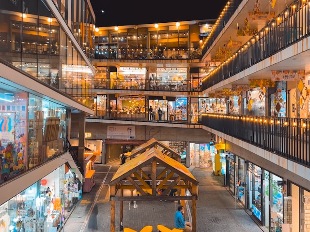
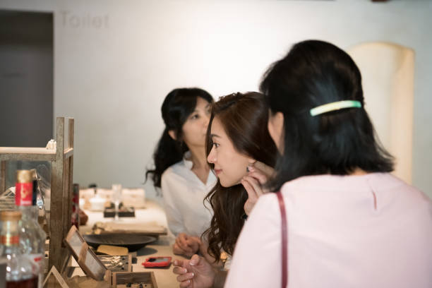
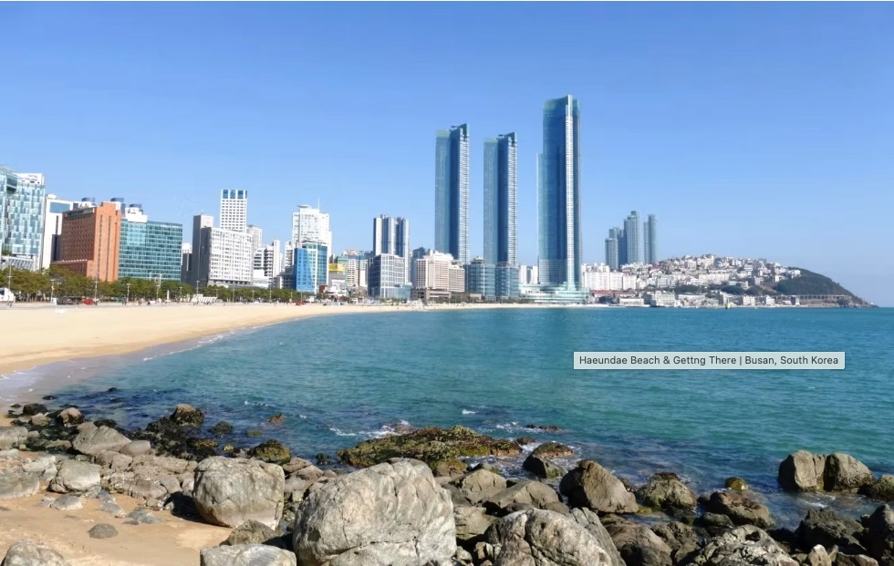
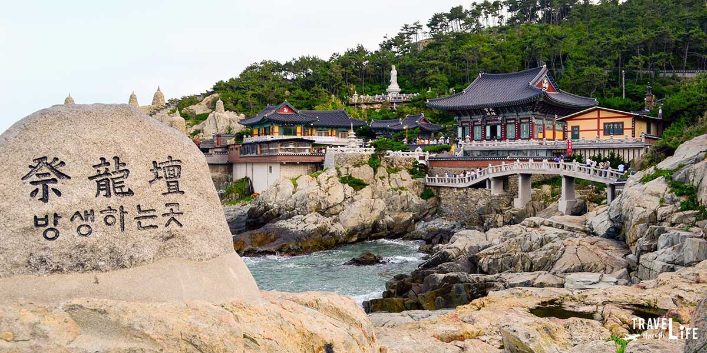
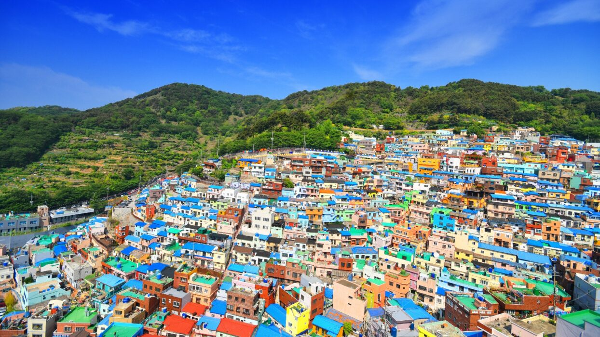
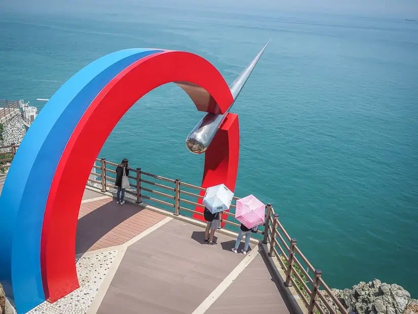
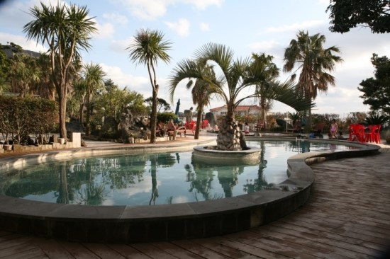
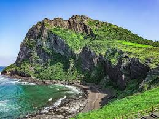
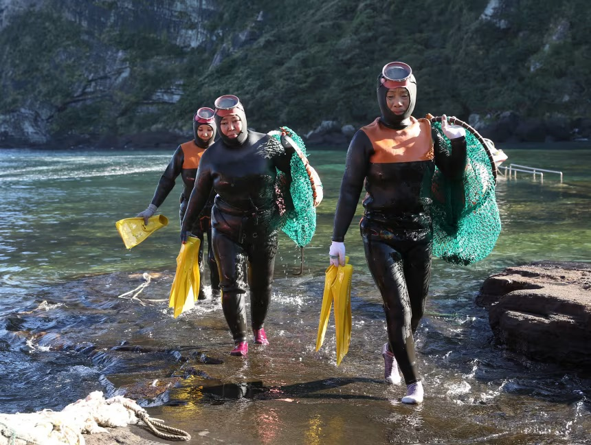
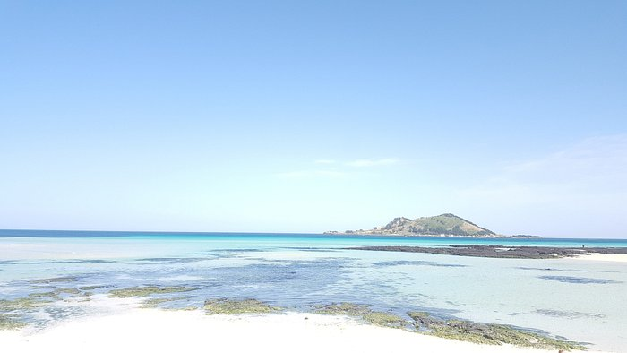

About This Journey
Three cities, three completely different sides of Korea. Seoul for culture and cutting-edge treatments. Busan for the coast, the food, and a different pace. Jeju for nature, stillness, and a restorative close. Before you travel, we listen to your concerns and share treatment suggestions with estimated costs so nothing catches you off guard. The doctor confirms your plan in person on Day 2 — and six-plus sessions unfold quietly from there.
Your Planning Service Includes
Day by Day

Arrive in Seoul, check in, and rest. Today has no agenda — just the city, a good meal, and time to recover from the journey. A welcome dinner to ease you in.

Morning at the clinic — the doctor assesses your skin in person, walks through the treatment options we've discussed, and confirms exactly what's right for you. You leave with a clear plan and a clear cost. The city is yours for the rest of the day.

A recovery day. Gyeongbokgung Palace in the morning, the ancient lanes of Bukchon Hanok Village in the afternoon. Seoul's oldest streets, unhurried.

Morning at the clinic — your specialist continues the plan. Afternoon free in modern Seoul: shopping, culture, or simply wandering.

A full cultural day — no clinics. K-pop idol recording studio session, a Korean makeup class with a professional artist, and a Korean photo studio shoot. Seoul at its most memorable.

A final Seoul treatment session. Afternoon at the Han River — a picnic on the grass, city views, the easy rhythm of a local afternoon.

A slow final morning in the city. Then the KTX bullet train south — two and a half hours, and you arrive in an entirely different Korea.

Check into your hotel on Haeundae Beach. A mid-trip clinic visit in the afternoon — a check-in with your skin and your fourth treatment session to maintain momentum.

Haedong Yonggungsa — a Buddhist temple built on the sea cliffs, unlike anything in Seoul. Afternoon in the colorful hillside streets of Gamcheon Culture Village.

Fifth treatment session in the morning. Afternoon aboard the famous coastal Sky Capsule railway — glass capsules running along the sea cliffs, panoramic ocean views.

Morning at Taejongdae — dramatic cliff edges, lighthouse, sea. Early afternoon flight to Jeju Island for the final chapter.

Arrive in Jeju and check into your resort. An afternoon volcanic hot spring bath — Jeju's mineral-rich water is renowned for what it does to skin. Evening spa to close.

Your sixth and final treatment session — a closing appointment to seal in your results. Afternoon at Seongsan Ilchulbong, the UNESCO volcanic crater that rises from the sea.

A full wellness day — jjimjilbang sauna in the morning, the haenyeo women divers cultural experience, and a slow afternoon on Jeju's turquoise-water beach. Farewell dinner: Jeju black pork and fresh seafood.

Sunrise breakfast with ocean views. Your concierge delivers your post-treatment home-care kit — a customized skincare routine and follow-up recommendations to maintain your results long after you land. Depart from Jeju International Airport.